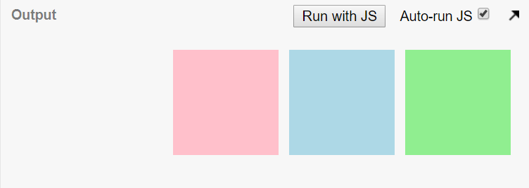
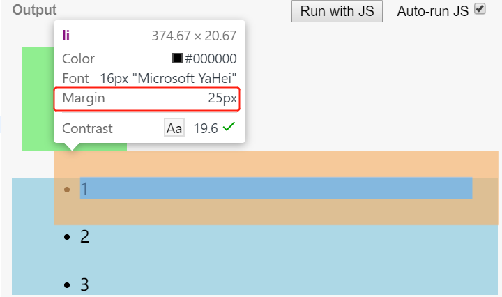
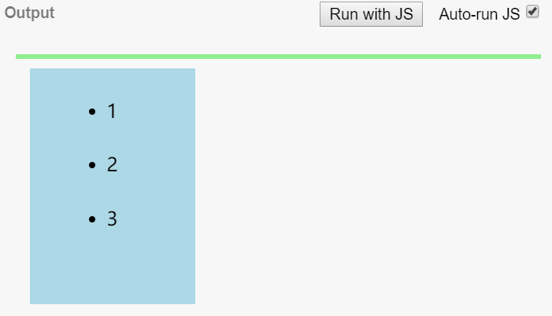
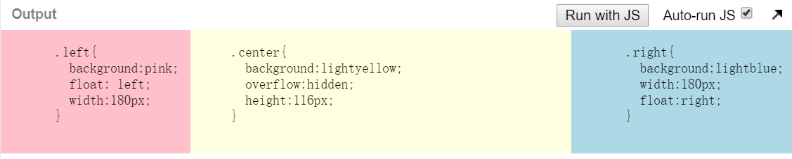

在实现CSS的布局时,假设我们不知道BFC的话,很多地方我们生成了BFC但是不知道.在布局中,一个元素是block元素还是inline元素是必须要知道的.而BFC就是用来格式化块状元素盒子,同样还有管理内连盒子的IFC等.那首先就来了解一下什么是FC.
FC: Formatting Context指的是页面中的一个渲染区域,并且拥有自己的渲染规则.决定子元素如何定位,以及和其他元素的相互作用和联系.
BFC: 块级格式化上下文, 是一个独立的块级渲染区域,只针对块级元素,有一套自己的渲染规则来约束块级盒子,与外部无关.
既然BFC是一块独立的渲染区域,那么这块区域在哪里,有多大, 这就有生成BDC的元素决定,CSS2.1中规定, 满足以下CSS声明的元素就会生成BFC.
display: inline-block, table-cell, table-caption(注意: 值为table会生成BFC是因为会默认生成一个匿名的table-cell,所以不是table生成了BFC)position: absolute, fixed浏览器对BFC约束如下:
1. 生成BFC的子元素会一个接一个的放置,在垂直方向上的起点是包含块的顶部,相邻的子元素之间的垂直距离由margin控制.在BFC中相邻的块级元素外边距会折叠.
2. BFC中的子元素中,每一个子元素的左外边距与包含块的左边界接触(从右到左的格式化,与右边界接触),即使浮动元素也如此,除非这个子元素也创建了BFC.
具体展开来说就是:
1. 内部Box在垂直方向上一个接一个放置
2. 垂直方向的距离由margin决定.
3. 每个元素的左外边距与包含块的左边界接触,即使浮动元素也是如此.所以BFC中的元素不会超出包含块,但是position为absolute的元素可以超出包含块的边界.
4. BFC的区域不会与float元素的区域重合.
5. 计算BFC的高度会包含float元素,但是float元素会使父元素高度塌陷.注意区别BFC高度和父元素高度.
6. BFC相当于页面上的一个独立的容器.子元素不影响外部元素,反之亦然.
所以看到这些约束,一些常见的规则就可以了解原因.比如:
- 块级元素与父元素同宽,垂直排列
- 垂直方向上的相邻div的外边距会折叠
- 浮动元素会尽量接近左上方
- 父元素浮动,或者overflow为hidden会包住子元素
同一个BFC中的两个相邻Box才会发生重叠与方向无关，不过由于上文提到的第一条限制，我们甚少看到水平方向的margin重叠。这在IE中是个例外，IE可以设置write-mode
<!doctype HTML><html><head><style type="text/css"> #green { margin:10px 10px 10px 10px } #blue { margin:10px 10px 10px 10px } #red { margin:10px 10px 10px 10px } body { writing-mode:vertical-rl; }</style></head><body><div id="green" style="background:lightgreen;height:100px;width:100px;"></div><div id="blue" style="background:lightblue;height:100px;width:100px;"></div><div id="red" style="background:pink;height:100px;width:100px;"></div></body></html>可以看到水平方向发生了重叠

要阻止margin重叠，只要将两个元素别放在一个BFC中即可（可以用上文提到的方式让相邻元素其中一个生成BFC）。阻止两个相邻元素的margin重叠看起来没有什么意义，主要用于嵌套元素。
<!DOCTYPE html><html><head> <meta http-equiv="Content-Type" content="text/html; charset=utf-8"> <!--The viewport meta tag is used to improve the presentation and behavior of the samples on iOS devices--> <meta name="viewport" content="initial-scale=1, maximum-scale=1,user-scalable=no"/> <title></title> <style> html, body { height: 100%; width: 100%; margin: 0; padding: 0; } .first{ margin:20px; background:lightgreen; width:100px; height:100px; } ul{ /*display:inline-block;*/ margin:10px; background:lightblue; } li{ margin:25px; } </style></head><body> <div class="first"></div> <ul> <li>1</li> <li>2</li> <li>3</li> </ul></body></html>此时div与ul之间的垂直距离，取div、ul、li三者之间的最大外边距。

要阻止嵌套元素的重叠，只需让ul生成BFC即可（将代码中饭的display注释去掉），这样div、ul、li之间便不会发生重叠现象。而li位于同一BFC内所以仍然存在重叠现象。
在清楚浮动带来的问题的解决方案中,一定会回答用BFC清除,那到底是怎么清除的呢?根本原因就是父级元素创建BFC后,子元素即使浮动也会参与BFC高度的计算.即不会产生高度塌陷的问题.
<!DOCTYPE html><html><head> <meta charset="utf-8"> <title>JS Bin</title> <style> html, body { height: 100%; width: 100%; margin: 0; padding: 0; } .first{ margin:20px; background:lightgreen; border: 2px solid lightgreen; /*display:inline-block;*/ /*overflow:hidden;*/ /*float: left;*/ /*position: absolute;*/ } ul{ overflow:hidden; margin:10px; background:lightblue; width:100px; height:200px; float: left; } li{ margin:25px; } </style></head><body> <div class="first"> <ul> <li>1</li> <li>2</li> <li>3</li> </ul> </div></body></html>
将代码中first样式中任意一项注释去掉都可以得到包围浮动的效果，其中overflow：hidden方式，与正常流最接近。
关于清除浮动的详细介绍,请参考这篇简洁明了的文章.
通过BFC约束: BFC的区域不会与float的元素区域重叠, 可以来实现多栏布局.
<!DOCTYPE html><html><head> <meta charset="utf-8"> <title>JS Bin</title> <style> html, body { height: 100%; width: 100%; margin: 0; padding: 0;}.left{ background:pink; float: left; width:180px;}.center{ background:lightyellow; overflow:hidden;}.right{ background: lightblue; width:210px; float:right;} </style></head><body> <div class="container"> <div class="left"> <pre> .left{ background:pink; float: left; width:180px; } </pre> </div> <div class="right"> <pre> .right{ background:lightblue; width:180px; float:right; } </pre> </div> <div class="center"> <pre> .center{ background:lightyellow; overflow:hidden; height:116px; } </pre> </div> </div></body></html>这种布局的特点在于左右两栏宽度固定，中间栏可以根据浏览器宽度自适应。

初次看到BFC这个词,是在一个面试题上.然后百度了一下,看到了寒冬大神的一篇博客,当时看完是觉得BFC,对于大佬来说是必要的,对我而言还太早.确实,当时的我还是一个连布局什么都不是很懂的菜鸟(当然现在也是).在看了一些CSS的基础之后,通过查阅资料,在这里提及一下,最新的布局方案Flex和Grid都会生成BFC,具体可以去看MDN,看一些前辈的心得,总是觉得会了,但是过段时间就忘掉了.俗话,能给别人讲明白才是真正的理解了.所以才绞尽脑汁写了这样一个总结.
其实对于BFC,我们只要知道一些特定的CSS声明会生成BFC,浏览器对BFC有一套特定的渲染规则,利用这些特殊的规则在布局上解决一些问题,就差不多了.但是当深入理解之后,会发现很多最常见的效果,就是因为BFC.当探究到这些的时候,前端的乐趣就在这里了.
文章中的内容可能有很问题,希望不吝指导.毕竟工作经验对于我还是欠缺的,遇到问题探究问题的方式方法不一样.不过话说回来,技术的乐趣就在于不断的探究,试错,总结积累上.
最后提一下IE,在IE中有类似的hasLayout.有兴趣可以研究研究.